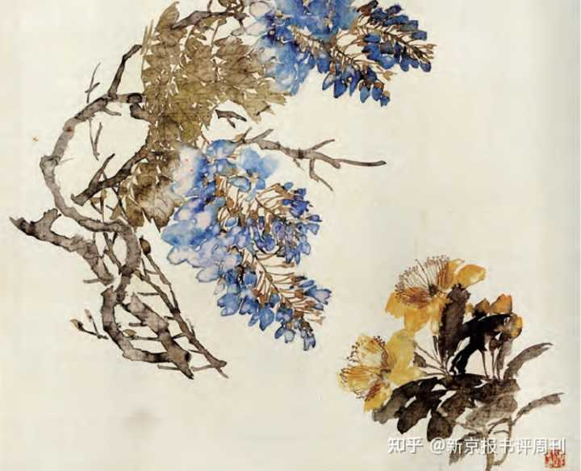

苏轼有哪些惊艳的诗词？
作者：潘向黎 - 新京报书评周刊
苏轼一生留下四千八百多篇文章、两千七百余首诗、三百多首词，其中惊艳世人的更是不胜数，例如《水调歌头》、《定风波》、《临江仙·夜归临皋》等。
苏东坡是我从小就知道，并从父辈的态度中感觉到他非比寻常的人；后来，我明白了他的独一无二：苏东坡，是每个中国人都想与之做朋友的人，是尘世间最接近神仙的人。
苏东坡和水的缘分
东坡和水，缘分特别深。
也许是因为他出生在四川眉山，“我家江水初发源”（苏轼《游金山寺》）；也许是作为南方人，自幼感受到“天壤之间，水居其多”（苏轼《何公桥》）；也许是因为他和水特别有缘，“我公所至有西湖”（秦观《东坡守杭》），“东坡到处有西湖”（丘逢甲《西湖吊朝云墓》）；也许是因为流水的美，与他的明快心性和艺术气质特别契合；也许真的应了那句话——“仁者乐山，智者乐水”，东坡不但是一个仁者，更是一位智者。
东坡爱水。谈自己的文章时用水的比喻——“吾文如万斛泉源，不择地皆可出”，他谈好文章的标准，也用水的比喻——“如行云流水，初无定质，但常行于所当行，常止于不得不止，文理自然，姿态横生”。后人用“苏海”来评价他的诗文，很恰当，也正对了东坡的脾性。读东坡文章，其迈往凌云处、酣畅淋漓处、妙趣横生处、闲远萧散处，总要各人自己去体会，但最要体会的是那种像水一样的灵动、开阔和自由。
东坡多写水。他一写水，笔端就分外精神。前《赤壁赋》中“清风徐来，水波不兴”“白露横江，水光接天”等句不说，只看他的诗词，到处都有波光和水声。
且看他写湖：“江南春尽水如天，肠断西湖春水船”，“凤凰山下雨初晴，水风清，晚霞明”，“微风萧萧吹菰蒲，开门看雨月满湖”，“水清石出鱼可数”，“水光潋滟晴方好，山色空蒙雨亦奇”，“菰蒲无边水茫茫，荷花夜开风露香”，“水枕能令山俯仰，风船解与月徘徊”……
且看他写江河：“惟有一江明月碧琉璃”，“夜阑风静縠纹平”，“江涵秋影雁初飞”，“半濠春水一城花”，“霜降水痕收，浅碧粼粼露远洲”，“一千顷，都镜净，倒碧峰”，“岷峨雪浪，锦江春色”，“霜余已失长淮阔，空听潺潺清颍咽”，“隋堤三月水溶溶”，“竹外桃花三两枝，春江水暖鸭先知”……
且看他写浪与潮：“乱石穿空，惊涛拍岸，卷起千堆雪”，“有情风、万里卷潮来，无情送潮归”，“雪浪摇空千顷白”，“夜半潮来，月下孤舟起”……
且看他写雨：“黑云翻墨未遮山，白雨跳珠乱入船。卷地风来忽吹散，望湖楼下水如天”，“天外黑风吹海立，浙东飞雨过江来”，“墨云拖雨过西楼”，“欹枕江南烟雨”，“疏雨过，风林舞破，烟盖云幢”，“潇潇暮雨子规啼”，“雨洗东坡月色清”，“急雨岂无意，催诗走群龙”，“雨已倾盆落”，“烟雨暗千家”……
且看他写溪：“照野弥弥浅浪”，“山下兰芽短浸溪”，“北山倾，小溪横”，“连溪绿暗晚藏乌”……
看他写激流：“有如兔走鹰隼落，骏马下注千丈坡。断弦离柱箭脱手，飞电过隙珠翻荷。四山眩转风掠耳，但见流沫生千涡。”
看他写泉：“雪堂西畔暗泉鸣”，“独携天上小团月，来试人间第二泉”，“劝尔一杯菩萨泉”，“但向空山石壁下，爱此有声无用之清流”，“桥对寺门松径小，槛当泉眼石波清”，“倦客尘埃何处洗，真君堂下寒泉水”……
水最大者为海，看他写海：“东方云海空复空，群仙出没空明中”，“登高望中原，但见积水空”，“云散月明谁点缀，天容海色本澄清”……
水最微者莫过露，看他写露：“曲港跳鱼，圆荷泻露”，“草头秋露流珠滑”，“月明看露上”……
在人生最后阶段，苏轼进入了“天地之境”
东坡的诗从题材到风格都丰富，名作很多，只选几首来说，虽近乎以瓣识朵、由珠窥海，但其中有我理解东坡诗词的入口，聊记于此。
和子由渑池怀旧
人生到处知何似？应似飞鸿踏雪泥。
泥上偶然留指爪，鸿飞那复计东西。
老僧已死成新塔，坏壁无由见旧题。
往日崎岖还记否，路长人困蹇驴嘶。
人生行止不定，去留充满偶然，留下的痕迹也必将在时间中消失，确实令人感到空幻而惆怅。但只要心里依然清晰保留着旧痕，则旧事依旧在记忆中鲜活；共同经历过“往日”的人，只要彼此都“还记”那段往昔，则一切都成了可以分享的人生体验。
前人多说此诗“富有理趣”（周裕锴语），其实更可以从中领悟东坡的多情和善解（悟）。对“路长人困”“往日崎岖”尚且如此恋恋不忘，则人生何事、何时、何种境地不可记取，不可回味？什么经历没有价值，没有意义？所以他在另一首诗里写道：“我生百事常随缘”“人生所遇无不可”（苏轼《和蒋夔寄茶》）。重情而不执于情，于无趣处发现乐趣、领悟理趣——理趣有时候对诗意是一种威胁，但在东坡这里不成问题，他的感觉（感性）依然兴冲冲的，理趣只增加了对人生体悟的深度。
东坡对人生的热爱和对日常生活的强烈兴趣，超尘脱俗的胸怀，加上擒纵杀活的文字本领，所以其诗常明净爽利而清澈，有一种透明的美感。写景者，如传诵极广的《饮湖上初晴后雨》、《惠崇〈春江晓景〉》，如《舟中夜起》亦是，又如《六月二十七日望湖楼醉书》亦复是。状物者，如《东栏梨花》《海棠》皆是。
万不可死心眼，只认定坡老单单就是写湖、写雨、写梨花、写海棠，定要看出此老心胸广、气象大，和大自然是够交情的真朋友。君不见同时代人带给他多少磨难与伤痛？幸而有大自然对他始终公平，始终善待。
以下两首诗最要对照参读：
出颍口初见淮山，是日至寿州
我行日夜向江海，枫叶芦花秋兴长。
长淮忽迷天远近，青山久与船低昂。
寿州已见白石塔，短棹未转黄茅冈。
波平风软望不到，故人久立烟苍茫。
全然写景，而心情自见。顾随对这首诗评价不高，但这诗其实好，尤其适合念出来，一念，那种笔法流转之美，那种云烟迷蒙心事苍茫之感，就都出来了。
参横斗转欲三更，苦雨终风也解晴。
云散月明谁点缀？天容海色本澄清。
空余鲁叟乘桴意，粗识轩辕奏乐声。
九死南荒吾不恨，兹游奇绝冠平生。
（《六月二十日夜渡海》）
经历了人生的几番大起大落、无数煎熬和解脱，前诗那种身不由己、颠沛流离时的惆怅和迷惘，已经不见了，到了人生的最后阶段，苏轼进入了“天地之境”。
正如朱刚《苏轼十讲》所言，“一次一次悲喜交迭的遭逢，仿佛是对灵魂的洗礼，终于呈现一尘不染的本来面目。生命到达澄澈之境时涌自心底的欢喜，弥漫在朗月繁星之下，无边大海之上。”
“何似在人间”，“在人间”谈何容易！人间给了东坡太多的黑暗、恐惧、痛苦、无奈和辛酸。看到这位谪仙留在人间，到了人生的最后，没有悔恨，没有悲凉，了无遗憾，全无挂碍，而是这样得大解脱，得大圆满，得大光明，得大自在，真是令人欣慰、震撼和感动的。
从“我行日夜向江海”到“天容海色本澄清”，生命的意义实现了，人生的境界如此圆满。
苏轼一生留下四千八百多篇文章、两千七百余首诗、三百多首词，他的诗那么多，自然不可能每首都好。东坡写诗常常一触即发，而且写得快，他自己也说要快——“作诗火急追亡逋，清景一失后难摹”。
不但不是每一首都好,就是那些相当有名的,有时艺术上也不高明，比如《寓居定惠院之东，杂花满山，有海棠一株，土人不知贵也》，据说是他平生得意的一首，每每写以赠人，我觉得东坡“每每写以赠人”是真，但怀疑选这诗的原因未必是“平生得意”，而出于手录诗词的“技术”考量：因为这首够长，七言28句，有196字，赠人如果写小字，选字数这么多的作品正适合。因为全诗太不经意，感情浮泛，间有俗笔（比如以“朱唇得酒晕生脸，翠袖卷纱红映肉”写海棠，既不幽独，又不清淑，意境全无，快不成诗了），明显酝酿不足加锤炼不够。他才大，真任性，且一任到底。前人说苏轼“凡事俱不肯著力”，他创作状态一贯自信而轻松，结果好的就真好——出色且自在，不好的就有点草率。
他是天才，什么都“不肯著力”，而“做诗应把第一次来的字让过去”（顾随语），在杜甫凝神“把第一次来的字让过去”的时间里，东坡早就一挥而就，然后喝酒去了。我辈终不能夺下坡公酒杯，让他再去推敲润色。况且许多时候，在他那样困苦绝望的处境中，“我写故我在”，靠着写诗、填词，也许还有给朋友写信，这位诗人才能活下来。还有什么，比让人活下来更重要的吗？没有。诗不是每首都好，打什么紧！泥沙俱下又有何妨，那江河不是还在奔流么？
才华、豪气、雅量、情思俱备的苏东坡，是词的解放者
终于要说东坡词。东坡所作词比诗少多了，但其词一般被认为是“此老平生第一绝诣”（陈廷焯语）。在我看来，东坡诗、词，主要是重要性不同。读诗若不读东坡诗，虽有损失，但可以读唐诗来大致弥补；但读词若不读东坡词，哪怕读遍了晚唐、北宋、南宋的词……那损失还是无法弥补。
过去一提到东坡，就贴一个“豪放派”的标签，这个已经有不少方家力证其非，有的说“豪放”二字今古理解不同，有的说其实东坡能婉约亦能“协律”，有的则说当时根本不存在豪放派……但还是顾随说得最痛快：分什么豪放、婉约？根本是多事。（《苏辛词说》）
事实是：才华、豪气、雅量、情思俱备的苏东坡，是词的解放者，他提升了词在文坛和社会上的地位，第一次让词和诗一样自由地抒情言志，第一次在词中完整地表现了一个士大夫的全人格，第一次在词中表现了“浅斟低唱”和“盈盈粉泪”之外的社会生活和人生感悟。
东坡词，若论名气响，一阕“大江东去”，一阕“明月几时有”，是并列冠军。正如顾随所说，《念奴娇·赤壁怀古》“震铄耳目”，最震撼，而《水调歌头》则“沦浃髓骨”，最感人。
对这两阕，朱刚的解读更进一层，值得注意：前者之“多情应笑我，早生华发”，“虽是一片无奈，但这无奈的多情之中，仍有未尝泯灭的志气在。因为只有志气不凡的人，才会对过去了的不凡的历史如此多情”；而后者“人有悲欢离合，月有阴晴圆缺，此事古难全”，可以解读为：“人世生活的本来状态就是不如意、不完美的，从来如此，也会永远如此。不但不该厌弃，正当细细品尝这人生原本的滋味。所以，‘但愿人长久，千里共婵娟。’”（《苏轼十讲》）
两首《江城子》，一首“十年生死两茫茫”，一首“老夫聊发少年狂”，一沉挚悲凉，一雄豪奔放，都很著名，可不去说它。《蝶恋花》之“天涯何处无芳草”“多情却被无情恼”万口脍炙，也不去说它。

坡公无人能及处，在于特别善结又善解。凡文艺作品，其实往往都与“结”有关，也未必到“情结”的地步，但必有“心结”“思结”“情绪结”，有所结，才发为作品。如今常说“感悟”，其实“感”与“悟”是两回事，作家诗人，因为感性发达更易深于情，所以感常常就是结，而经一番思量才“悟”，这是“解”。感得深，就是进得去。悟得透，就是出得来。这一番作为，并不容易，有的人进不去，有的人又出不来。一般人要么不擅结，要么不擅解，高手常常也是一阵子结一阵子解，有时候结不深，有时候解不透。而东坡善结又善解，甚至一边结，一边解。他真是七进七出，如入无人之境。
这不是天生的。天生解得开、透得出的人，哪里会有？
刚流放到黄州时，东坡的心情是非常悲凉的——
世事一场大梦，人生几度新凉？夜来风叶已鸣廊。看取眉头鬓上。酒贱常愁客少，月明多被云妨。中秋谁与共孤光。把盏凄然北望。（《西江月》）
又是寂落和孤冷的——
缺月挂疏桐，漏断人初静。谁见幽人独往来，缥缈孤鸿影。 惊起却回头，有恨无人省。拣尽寒枝不肯栖，寂寞沙洲冷。（《卜算子·黄州定惠院寓居作》）
若有所待地“北望”，能不能“北归”却由人不由己；“拣尽寒枝不肯栖”，是有持守，但“寂寞沙洲”如何是长久安身之地？现实和精神的出路在哪里？这两首词，都是“结”，没有“解”。
若尽是如此，便是柳宗元，而不是苏东坡了。
望江南·超然台作
春未老，风细柳斜斜。试上超然台上望，半壕春水一城花。烟雨暗千家。
寒食后，酒醒却咨嗟。休对故人思故国，且将新火试新茶。诗酒趁年华。
看东坡如何结，又如何解，后半阕可以看得清楚。尤其“休对”，分明是一边结一边解了。
浣溪沙·游蕲水清泉寺，寺临兰溪，溪水西流
山下兰芽短浸溪，松间沙路净无泥，萧萧暮雨子规啼。
谁道人生无再少？门前流水尚能西！休将白发唱黄鸡。
“暮雨”“白发”是暗结，以“流水尚能西”“休将”明解。
临江仙·夜归临皋
夜饮东坡醒复醉，归来仿佛三更。家童鼻息已雷鸣。敲门都不应，倚杖听江声。
长恨此身非我有，何时忘却营营。夜阑风静縠纹平。小舟从此逝，江海寄余生。
酒后夜归，进不了家门，这是现实中的小意外小困境，本不足以入词，但是东坡的愿望，不是尽快进门倒头而卧，或者越墙而入用手杖对家童教训几下子，而是超越现实得失计较和无尽尘世纷扰的心愿。于是低处的结从高处豁然得解。
这一路最好的代表，恐怕是这一阕——
定风波
三月七日，沙湖道中遇雨。雨具先去，同行皆狼狈，余独不觉，已而遂晴，故作此词。
莫听穿林打叶声，何妨吟啸且徐行。竹杖芒鞋轻胜马，谁怕？一蓑烟雨任平生。
料峭春风吹酒醒，微冷，山头斜照却相迎。回首向来萧瑟处，归去，也无风雨也无晴。
以“莫听”“何妨”解起，解在结先，随结随解，一路解来，最后已经不需解了，因为已经无结，到达超然物外之境。有人觉得这是通达，其实不是，通达是包容是气度，仍有是非，东坡已经放下是非；通达是不论境遇好坏均努力想开，而东坡完全超越了境遇。没有风雨和晴天之分，境遇也无所谓荣辱穷通，一切都是人生的一部分，无所谓风雨，无所谓晴，人便在境遇之上了。这样“解”，真透彻。
此外，《虞美人·有美堂赠述古》（“湖山信是东南美”）《南乡子·重九涵辉楼呈徐君猷》（“霜降水痕收”）《西江月》（“照野弥弥浅浪”）《鹧鸪天》（“林断山明竹隐墙”）等，也皆是这一路。
东坡当然有深情，但他不沉湎，沉湎就容易钻牛角尖，东坡一生样样都会，唯独不会钻牛角尖，他有雅量有逸气，故不论是分别还是相逢，即事抒情，总归于圆融朗润的高致。
八声甘州·寄参寥子
有情风、万里卷潮来，无情送潮归。
问钱塘江上，西兴浦口，几度斜晖。
不用思量今古，俯仰昔人非。谁似东坡老，白首忘机。
记取西湖西畔，正暮山好处，空翠烟霏。
算诗人相得，如我与君稀。
约他年、东还海道，愿谢公、雅志莫相违。
西州路，不应回首，为我沾衣。
清郑文焯在《手批东坡乐府》赞叹：“突兀雪山，卷地而来，真似钱塘江上看潮时，添得此老胸中数万甲兵，是何等气象雄且杰！妙在无一字豪宕，无一语险怪，又出以闲逸感喟之情，所谓骨重神寒，不食人间烟火气者。词境至此，观止矣！”
以下两阕也是风格清雄、意境阔大，兼豪放飞扬和浑融蕴藉——
水调歌头·黄州快哉亭赠张偓佺
落日绣帘卷，亭下水连空。
知君为我新作，窗户湿青红。
长记平山堂上，欹枕江南烟雨，杳杳没孤鸿。
认得醉翁语，山色有无中。
一千顷，都镜净，倒碧峰。
忽然浪起，掀舞一叶白头翁。
堪笑兰台公子，未解庄生天籁，刚道有雌雄。
一点浩然气，千里快哉风。
沁园春
孤馆灯青，野店鸡号，旅枕梦残。
渐月华收练，晨霜耿耿，云山摛锦，朝露漙漙。
世路无穷，劳生有限，似此区区长鲜欢。
微吟罢，凭征鞍无语，往事千端。
当时共客长安。似二陆初来俱少年。
有笔头千字，胸中万卷，致君尧舜，此事何难。
用舍由时，行藏在我，袖手何妨闲处看。
身长健，但优游卒岁，且斗尊前。
人总以苏辛并论，归之于豪放一路，又多以东坡“大江东去”“老夫聊发少年狂”为证据，其实不然。就连顾随，虽指出苏辛“不得看作一路”，但也是拿“大江东去”来对照，说其中的“乱石穿空，惊涛拍岸，卷起千堆雪”三句，“其健，其实，可齐稼轩”；其实以上三阕，其纵横之气，顿挫兼飞扬，刚健复柔婉，神完气足而自有远韵，苏轼都是辛弃疾的老师。当然，弟子未必不如师，大可并驾，甚至后来居上，但总要认他是老师，不可弄颠倒了。
行香子
清夜无尘，月色如银。
酒斟时、须满十分。
浮名浮利，虚苦劳神。
叹隙中驹，石中火，梦中身。
虽抱文章，开口谁亲。
且陶陶、乐尽天真。
几时归去，作个闲人。
对一张琴，一壶酒，一溪云。
这一阕许多选本不选，可能因为太单纯了。其实这种天真的气息，澄净的氛围，虽然缺少一些弦外之音，但这是苏东坡本性里的单纯和透明，非常洁净可爱。相比之下，那阕著名的《水龙吟·次韵章质夫杨花词》（“似花还似非花”）倒真意思不大，所谓“和韵而似原唱”（王国维语），也不过说把一个章质夫彻底比下去了，这于东坡而言还值得大惊小怪？词本身意境狭小而感情空泛，顾随也说“直俗矣”，并不见东坡本色手段。
然则东坡之本色手段，尽在上面所说的种种——在清旷超脱，在飘逸自如，在圆融朗润，在顿挫兼飞扬，刚健复柔婉吗？又不止于此。还在一股仙气——有情有思兼其心自远，能将眼前事写出天外韵。东坡每每因今昔变迁、人生短暂而思及时间和空间、真实和梦幻、过去和未来、此在和永恒，时时感受到人生行旅的深沉况味，更难得这铺天盖地的恍惚迷离，东坡竟还他一个铺天盖地：一世界的空灵，澄澈，光华流转，一尘不染。
永遇乐·彭城夜宿燕子楼，梦盼盼，因作此词
明月如霜，好风如水，清景无限。
曲港跳鱼，圆荷泻露，寂寞无人见。
如三鼓，铮然一叶，黯黯梦云惊断。
夜茫茫，重寻无处，觉来小园行遍。
天涯倦客，山中归路，望断故园心眼。
燕子楼空，佳人何在，空锁楼中燕。
古今如梦，何曾梦觉，但有旧欢新怨。
异时对，黄楼夜景，为余浩叹。
洞仙歌
冰肌玉骨，自清凉无汗。
水殿风来暗香满。
绣帘开，一点明月窥人，人未寝，欹枕钗横鬓乱。
起来携素手，庭户无声，时见疏星渡河汉。
试问夜如何？
夜已三更，金波淡，玉绳低转。
但屈指西风几时来，又不道流年暗中偷换。
这两阕，得一个“活”字，更占一个“仙”字。这股仙气，东坡实实有，辛弃疾实实学不来，也不必学。稼轩还自做稼轩去，东坡有一个便好。
东坡与米芾曾在扬州相遇，有一番令人忍俊不禁的对答。米芾对东坡说：世人都以米芾为“颠”，想听听您的看法。东坡笑着回答：吾从众。
如此便是苏学士明白教示了。若东坡问我时，我便答：世人皆以东坡为仙，吾亦从众。
新京报书评周刊：本文经出版方授权节选自《古典的春水》，标题为摘编者所加。